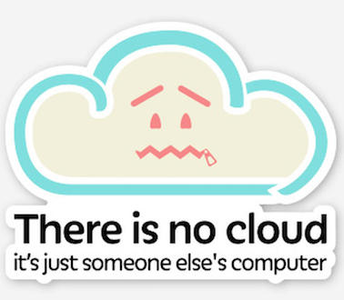

Introduction to Cloud Computing
In this lesson you'll learn how to connect and use a linux server. Most bioinformaticians worldwide connect daily to cloud computing services to perform their analyses.
There are several reasons for this. Firstly biology - like most other areas of science - is dealing with a deluge of data due to the rapid advancement of data collection methods. It is now common that data collected for an experiment doesn't fit on a researcher's laptop and that the resources needed for running an analysis far exceed a desktop computer's computing power.
Secondly the vast majority of research software are developed and released for linux. Most people run MacOS or Windows on their desktop computers and laptop, which makes the installation of some software difficult or at the very least inconvenient.
What is the cloud anyway?
The cloud is basically lots of servers (thing big big computers) stacked together in a giant, powerful infrastructure. You can lend part of this infrastructure for your computing needs. While it is not cheap, it is generally scalable and guarantees a stable environment.

In research there are two approaches to lend computing time and power: either (a) you lend computing time and resources from a commercial provider or you obtain access to a research computing infrastructure. Some countries have built national infrastructures where you can apply for computing time for your research projects. Most academic institutions or departments also have their own computing resources.
Popular cloud/HPC services
-
Academic:
-
Commercial:
For this tutorial, we'll use Microsoft azure.
Connecting to another computer
Connecting to another computer is usually done using the SSH protocol, which is an encrypted way to connect over the network. Before connecting to our cloud computers, we need to create them.
Note
While the cloud is effectively "someone else's computer" the way we use commercial cloud infrastructures is by create a virtual computer with the computing resources that we pay for.
Note
For this course, your instructor will create a virtual instance on the Azure cloud for you
Authentication
There are two main ways to authenticate to a remote server via SSH: using a password or using a cryptographic key. Using a key prevent people to try to guess your password and since brute-force attacks are very common on machines that have public IPs, we'll use keys.
Note
How do keys work? The keys we will use to connect to our machine work by pairs: a public key and a private key. Any machine you want to connect to using keys has to contain your public key, while the private key should always stay on your computer. When you try to connect to a machine and the two keys match, you successfully connect! Since your instructor will create a virtual machine for you, he will also provide you with a private key for this machine.
Put the private key your instructor gave you in the ~/.ssh folder:
mkdir -p ~/.ssh
chmod 700 ~/ssh
mv ~/Downloads/azure_rsa ~/.ssh
chmod 600 ~/.ssh/azure_rsa
First connection
Now you can connect to the virtual machine that was assigned to you
ssh -i .ssh/azure_rsa student@IP_ADDRESS
do not forget to replace IP_ADDRESS by your virtual machine ip in the above command!
Getting around
Now that you are connected to the cloud, there is a few things you should know.
- For all intents and purposes it is almost like being in the terminal of your own linux machine. All commands we've seen during the unix shell lesson will work
- you are administrator on your cloud machine. You have the power to break things...
- ... but do not freak out! the machine is not actually real, so anything you break can be rebuilt in a matter of minutes
- to exit the virtual machine, press
^Dor typeexit
Transferring files
One thing that will happen sooner while working in the cloud is that you will want to transfer files to or from your machine.
The command to transfer files over ssh is very similar to cpand is called scp, for secure copy.
Copying a file from your computer to the server
On your computer, firstly create a file:
echo "I will put that file on my cloud machine!" > my_file.txt
then use scp to transfer the file
scp my_file.txt student@IP_ADDRESS:/home/student/
Copying a file from the server to your computer
First, remove my_file.txt from your local computer
rm my_file.txt
then copy it back from the server
scp student@IP_ADDRESS:/home/student/my_file.txt .